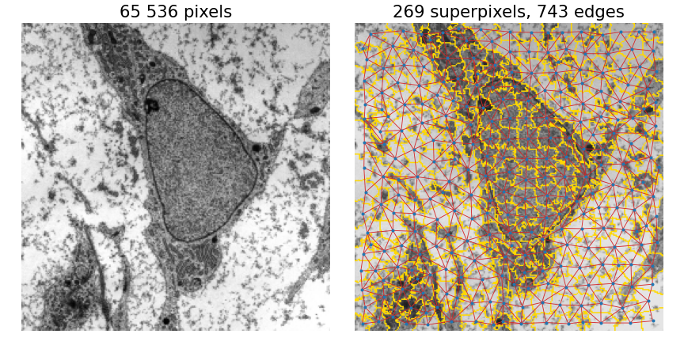
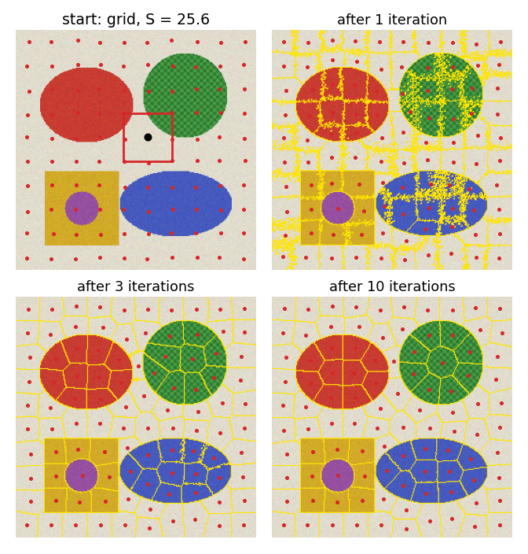
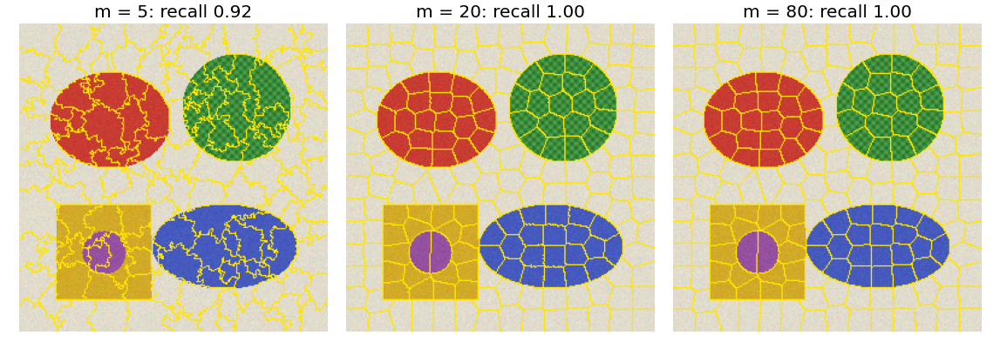
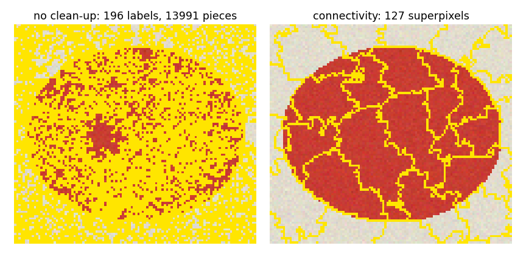
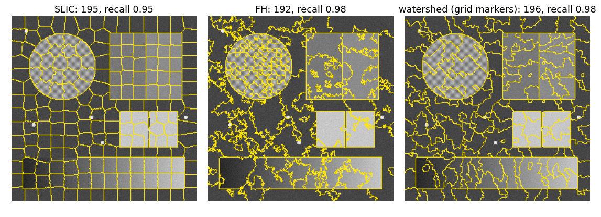
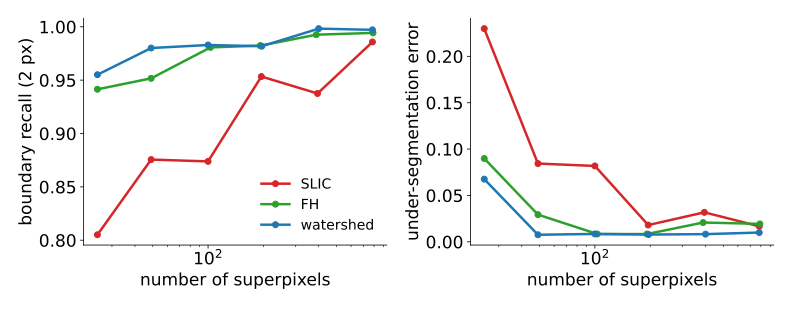
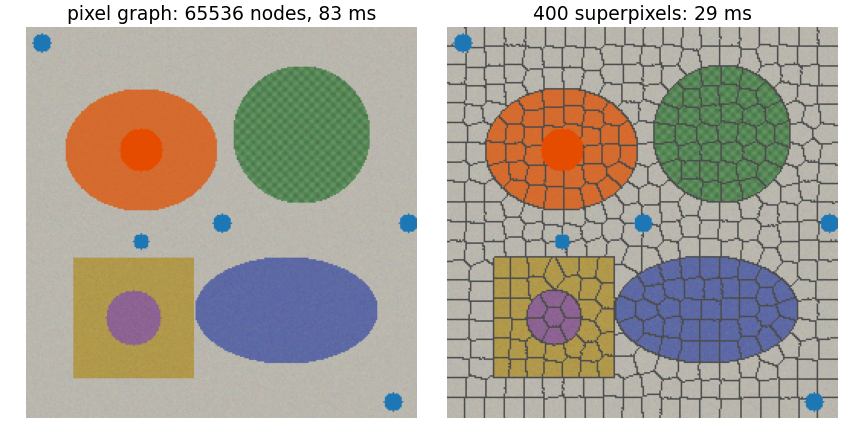
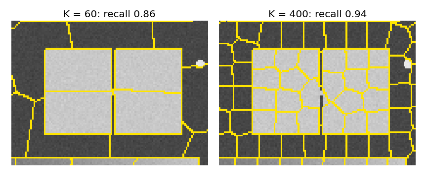

Graph cuts, the random walker and hierarchies all work on a graph with one node per pixel. Today: replace the pixels by a few hundred regions, and run everything on the much smaller graph.
Why superpixels, and what we want from them.
SLIC: k-means in colour and position, with a grid start and a local search window.
What the compactnessm and the number K do; the connectivity clean-up.
The price: a boundary missed by the superpixels is missed by everything that comes after them.

What we want from superpixels
Adhere to boundaries: every true boundary lies on a superpixel boundary.
Regular size and shape: compact, about the same area, so that neighbours are few and statistics comparable.
A chosen numberK.
Fast.
FH (spanning-tree unit) and the watershed (spanning-forest unit) give 1 and 4, but their regions are irregular and their number is controlled only indirectly (by k, or by the markers). SLIC aims at all four.
Recall: k-means in two steps
k-means groups points into K clusters by alternating (Otsu’s isodata is 1D 2-means; k-means in the Gaussian-mixture day):
Assign each point to the nearest centre;
Move each centre to the mean of its points.
Repeat until nothing changes. Each step lowers the sum of squared distances, so it always settles (at a local minimum, which depends on the start).
SLIC: k-means in colour and position
SLIC (Achanta et al., 2012): k-means on 5-D points (L, a, b, x, y), with three changes:
Centres start on a regular grid with spacing S = \sqrt{N/K}, each moved to the lowest gradient in its 3 \times 3 neighbourhood (so none starts on an edge).
The distance mixes colour and position: D^2 = d_c^2 + \Big(\frac{m\,d_s}{S}\Big)^2,d_c = colour difference (CIELAB, recall colour), d_s = distance in pixels, m = compactness.
Each centre only looks at pixels in a 2S \times 2S window around it.
About 10 iterations.

SLIC by hand: one pixel, two centres
Grey pixel p: I = 50 at (4, 4). Centre A: I = 52 at (0, 0). Centre B: I = 70 at (6, 4). S = 8.
d_c^2
d_s^2
D^2, m = 10
D^2, m = 40
A
4
32
4 + \tfrac{100}{64}\cdot 32 = 54
4 + \tfrac{1600}{64}\cdot 32 = 804
B
400
4
400 + \tfrac{100}{64}\cdot 4 = 406.25
400 + \tfrac{1600}{64}\cdot 4 = 500
m = 10: A wins: similar colour beats the larger distance.
m = 40: B wins: position dominates.
The switch: 4 + 32m^2/64 = 400 + 4m^2/64, i.e. m^2 = 396 \cdot 64/28, m \approx 30.
Why the window
Plain k-means compares every pixel with every centre: N \cdot K distances per iteration. For N = 65\,536 and K = 256: 16.8 million.
SLIC compares each pixel only with the centres whose 2S \times 2S windows cover it: about 4 (windows of side 2S on a grid of spacing S). About 4N \approx 262\,000 distances: 64 times fewer, and independent of K.
The windows also make the superpixels local: no superpixel can grab pixels far from its centre, even with small m.
Update step: D^2 is a weighted squared Euclidean norm in 5-D (weights 1 for colour, m^2/S^2 for position). For fixed assignments, \sum_{p \in C_k} D^2(p, \mathbf c) is minimised by the mean of the cluster in every coordinate (set the gradient to zero: \sum_p (\mathbf f_p - \mathbf f) = 0, likewise for position, whatever the weights).
Why monotonicity can break: k-means’ proof needs each pixel to choose the nearest of all centres. In SLIC a pixel only sees the centres whose windows cover it, and the windows move with the centres: a pixel can lose its centre’s window and be forced to a farther one, so J can increase. In practice it decreases quickly (on the colour scene: from 10.2 to 6.7 million in 10 iterations) and 10 iterations suffice.
Cost: O(N) per iteration, independent of K.
Compactness m
Small m: colour wins; superpixels follow every edge and every texture, with irregular, ragged shapes.
Large m: position wins; a grid of near-squares (hexagon-like) that ignores weak edges.
In between: compact superpixels that still snap to strong edges.
m is in the units of the colour difference: for CIELAB, 10–40 is typical. For grey images, scale the grey levels to 0–100 (like lightness) and use the same range.
Right (K = 200): boundary recall 0.92, 1.00 and 1.00 at m = 5, 20 and 80 on this easy scene.

Connectivity
k-means does not know that a superpixel should be one piece: with small m and noise, a label can be scattered over many fragments.
After the last iteration, every label keeps its largest connected piece; every other piece (an orphan) joins a neighbouring superpixel.
Connected components and union–find again (labelling unit).
Right (m = 6, noisy, a crop): 196 labels in 13 991 pieces before the clean-up; 127 superpixels after it.

Try it: SLIC
Measuring superpixels
Against a ground-truth segmentation:
Boundary recall: the fraction of true boundary pixels with a superpixel boundary within 2 px. High = no boundary missed.
Under-segmentation error: for each superpixel and each true region it overlaps, the smaller of “inside” and “outside”; summed over all pairs and divided by N. It counts how much superpixels spill over true regions.
Achievable segmentation accuracy: give every superpixel its majority true label; the fraction of pixels that are then right. No method that labels whole superpixels can do better: an upper bound for everything after.
More superpixels: recall and accuracy rise, but the graph grows and the regions get noisier.
Three methods compared


On the grey test scene (texture, faint step, ramp, thin line):
FH and the watershed follow the edges more closely (higher recall, lower error) at every K;
SLIC gives regular cells of the requested size; it trades some boundary adherence for that regularity, especially at small K (recall 0.81 at 25 superpixels).
Which matters depends on what comes next: regular cells give comparable features and a regular graph; edge-following regions lose fewer boundaries.
The math: achievable accuracy is an upper bound
Let superpixel s contain n_{s,c} pixels of true class c. A method that gives all pixels of s one label \ell_s gets n_{s,\ell_s} of them right. Its accuracy is \frac{1}{N}\sum_s n_{s,\ell_s} \le \frac{1}{N}\sum_s \max_c n_{s,c} = \text{ASA}, with equality exactly when every superpixel gets its majority class. So no superpixel-level method can exceed the achievable segmentation accuracy, whatever it computes.
Similarly the under-segmentation error is zero iff every superpixel lies inside one true region (each “smaller part” is then 0).
Using superpixels: a smaller graph
Build the superpixel graph (the RAG): one node per superpixel, an edge per touching pair, with weight = boundary length × contrast weight of the two means. Then run graph cuts, the random walker, normalized cuts or a hierarchy on it.
Right, the same seeds and \sigma: graph cut on 65 536 pixel nodes (83 ms) and on 400 superpixel nodes (29 ms, plus about 65 ms for SLIC itself). The result is the same object here.
Or classify superpixels with region features instead of pixels with pixel features (pixel classification).

What superpixels cannot do
A structure narrower than a superpixel gets no superpixel of its own. Right: the 2-pixel dark line between the two bright halves. With K = 60 (S ≈ 33 px) the superpixel boundaries happen to run along it, but the line itself is merged into its neighbours; boundary recall over the whole scene is 0.86 at K = 60 and 0.94 at K = 400.
On flat regions SLIC produces an arbitrary grid: the boundaries there mean nothing.
With K too small for the objects, superpixels straddle object boundaries and the achievable accuracy drops.

Variants
Compact watershed: a watershed from grid markers with a compactness term: SLIC-like regularity at watershed speed.
Energy-driven boundary moves (SEEDS and relatives): start from a grid and move boundary pixels while an energy improves.
Supervoxels in 3D and video: the same algorithm with z or t added to the position.
Image libraries ship SLIC, FH and compact watershed under those names.
Summary
Superpixels shrink the graph from tens of thousands of pixels to a few hundred regions; a boundary they miss is lost for good.
SLIC = k-means in (colour, x, y), started on a grid with spacing S = \sqrt{N/K}, distance D^2 = d_c^2 + (m\,d_s/S)^2, each centre searching a 2S \times 2S window: about 4N distances per iteration instead of NK.
Compactnessm: small = follows edges, ragged; large = regular grid. A connectivity step removes orphan fragments.
Measure with boundary recall, under-segmentation error and achievable accuracy (an upper bound for everything after).
FH and the watershed adhere better to edges; SLIC gives regular cells of a chosen size.